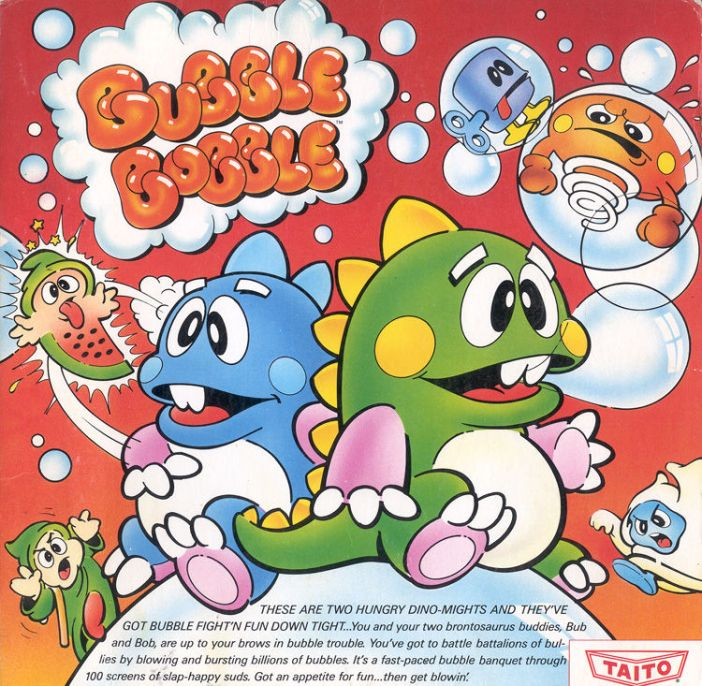

-
Sale Waypoint
Sale Waypoint is a website I made for Advanced Databases class. I used three NoSequal databases (RavenDB, Redis, Neo4j) and polyglot persistance to store the data for in the most optimal way.
-
Scheme Interpreter

Using the knowledge of programming languagne concepts that I leaned at Rose-Hulman, I made an intepreter for the scheme language.
-
Processor Design

In Computer Architecture, I designed a simple 16 bit computer architecture. I then used verilog to implement this processor and program it on to an FPGA.
-
Object Oriented Game Design
I created a game based on the classic arcade game bubble bobble. My focus for this project was to make sure to follow object oriented design principles.